library(dplyr)
library(COTAN)
library(Seurat)
library(tibble)
library(ggplot2)
library(zeallot)
library(DropletUtils)Filtering of PBMC2 using COTAN
Library import
Settings
datasetName = 'PBMC2'
datasetFolder = './Data/'
inDir = paste(datasetFolder, datasetName, '/raw/10X/', sep='')
outDir = paste(datasetFolder, datasetName, '/filtered/', sep='')
dir10X = paste(outDir, '10X/', sep='')
if (!dir.exists(outDir)) {
dir.create(outDir, recursive = TRUE, showWarnings = FALSE)
}
setLoggingLevel(2)
setLoggingFile(paste(outDir, "logfile.log", sep=""))
options(parallelly.fork.enable = TRUE)Data loading
dataset = Read10X(data.dir = inDir, strip.suffix = TRUE)
dataset = dataset[[1]]
sampleCond <- datasetName
PBMC2 <- COTAN(raw = dataset)
PBMC2 <- initializeMetaDataset(
PBMC2,
GEO = paste("10X ", datasetName, sep=""),
sequencingMethod = "10X",
sampleCond = sampleCond
)Inspect cells’ sizes
cellSizePlot(PBMC2)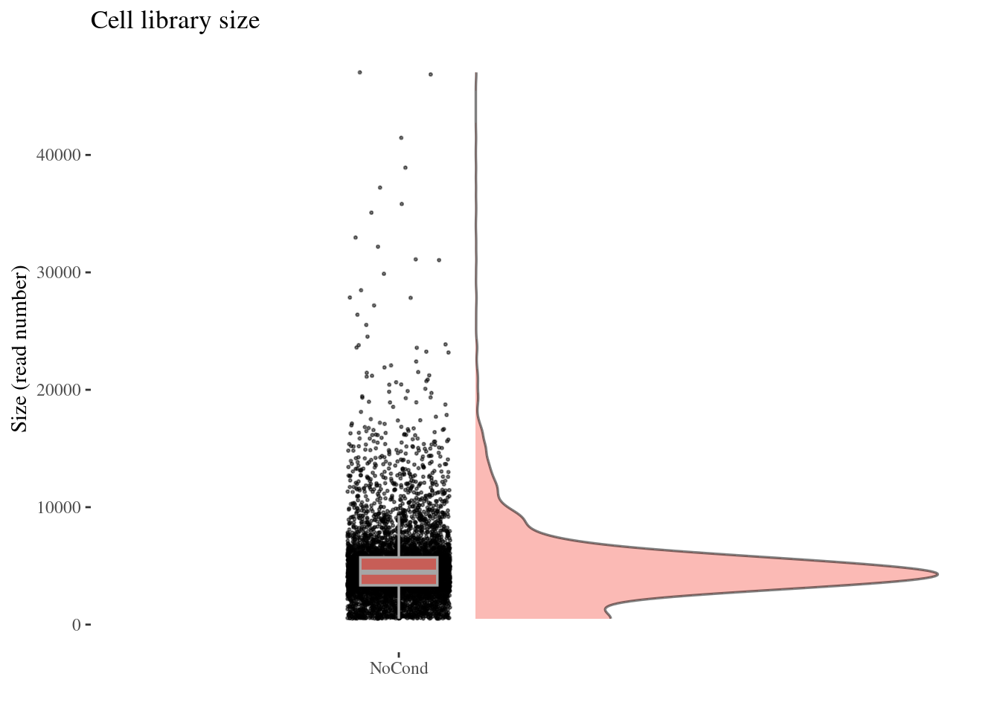
Drop cells with too many reads as they are probably doublets
cellsSizeThr <- 20000
PBMC2 <- addElementToMetaDataset(PBMC2, "Cells size threshold", cellsSizeThr)
cellsToRem <- getCells(PBMC2)[getCellsSize(PBMC2) > cellsSizeThr]
PBMC2 <- dropGenesCells(PBMC2, cells = cellsToRem)Inspect the number of expressed genes per cell
genesSizePlot(PBMC2)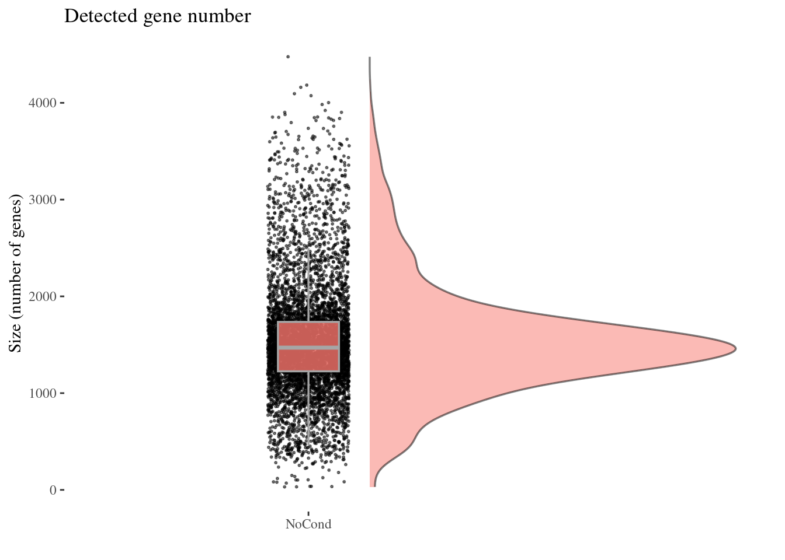
Drop cells with too high genes expression as they are probably doublets
geneSizeThr <- 3500
PBMC2 <- addElementToMetaDataset(PBMC2, "Num genes threshold", geneSizeThr)
numExprGenes <- getNumExpressedGenes(PBMC2)
cellsToRem <- names(numExprGenes)[numExprGenes > geneSizeThr]
PBMC2 <- dropGenesCells(PBMC2, cells = cellsToRem)
genesSizePlot(PBMC2)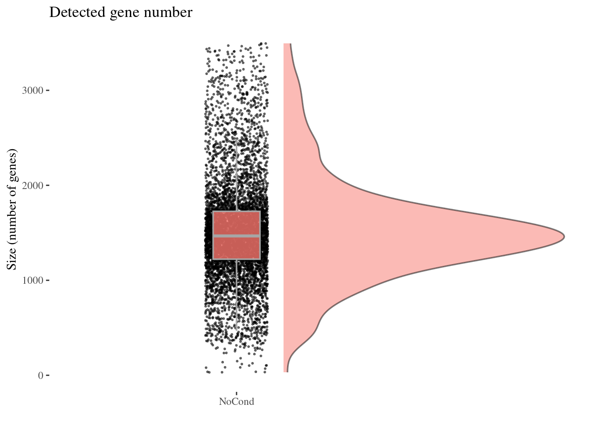
cellsToRem <- names(numExprGenes)[numExprGenes < 100]
PBMC2 <- dropGenesCells(PBMC2, cells = cellsToRem)
genesSizePlot(PBMC2)Check number of mithocondrial genes expressed in each cell
mitGenesPattern <- "^[Mm][Tt]-"
getGenes(PBMC2)[grep(mitGenesPattern, getGenes(PBMC2))] [1] "MT-ND1" "MT-ND2" "MT-CO1" "MT-CO2" "MT-ATP8" "MT-ATP6" "MT-CO3"
[8] "MT-ND3" "MT-ND4L" "MT-ND4" "MT-ND5" "MT-ND6" "MT-CYB" c(mitPlot, mitSizes) %<-%
mitochondrialPercentagePlot(PBMC2, genePrefix = mitGenesPattern)
plot(mitPlot)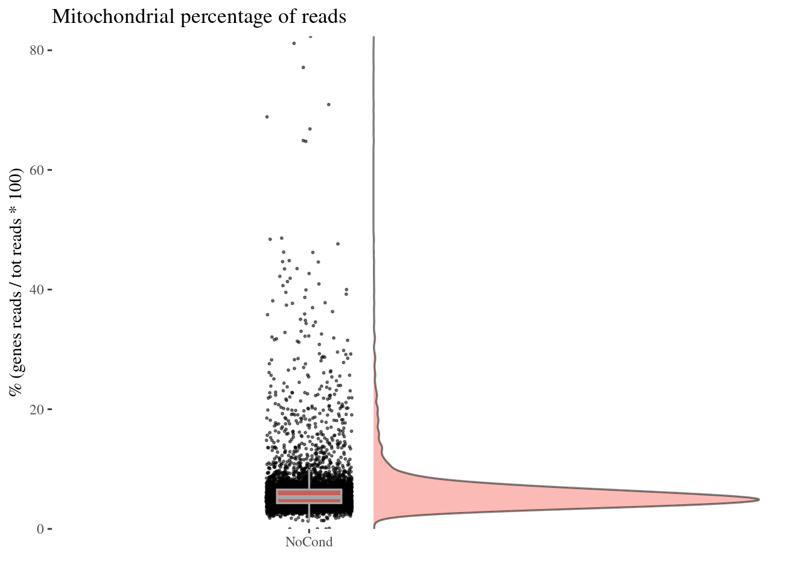
We drop cells with a too high percentage of mitocondrial genes (are likely dead)
mitPercThr <- 10
PBMC2 <- addElementToMetaDataset(PBMC2, "Mitoc. perc. threshold", mitPercThr)
cellsToRem <- rownames(mitSizes)[mitSizes[["mit.percentage"]] > mitPercThr]
PBMC2 <- dropGenesCells(PBMC2, cells = cellsToRem)
c(mitPlot, mitSizes) %<-%
mitochondrialPercentagePlot(PBMC2, genePrefix = mitGenesPattern)
plot(mitPlot)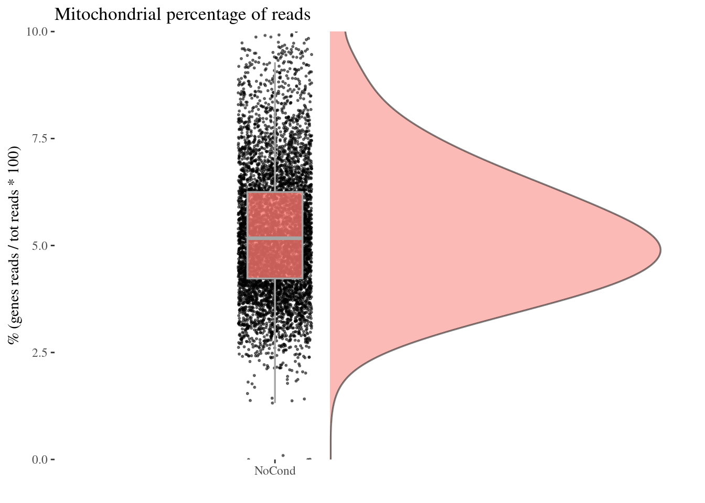
Check number of ribosomial genes expressed in each cell
ribGenesPattern <- "^RP[SL]\\d+"
getGenes(PBMC2)[grep(ribGenesPattern, getGenes(PBMC2))] [1] "RPL22" "RPL11" "RPS6KA1" "RPS8" "RPL5"
[6] "RPS27" "RPS6KC1" "RPS7" "RPS27A" "RPL31"
[11] "RPL37A" "RPL32" "RPL15" "RPL14" "RPL29"
[16] "RPL24" "RPL22L1" "RPL39L" "RPL35A" "RPL9"
[21] "RPL34-AS1" "RPL34" "RPS3A" "RPL37" "RPS23"
[26] "RPS14" "RPL26L1" "RPS18" "RPS10-NUDT3" "RPS10"
[31] "RPL10A" "RPL7L1" "RPS12" "RPS6KA2" "RPS6KA2-IT1"
[36] "RPS6KA2-AS1" "RPS20" "RPL7" "RPL30" "RPL8"
[41] "RPS6" "RPL35" "RPL12" "RPL7A" "RPS24"
[46] "RPL27A" "RPS13" "RPS6KA4" "RPS6KB2" "RPS6KB2-AS1"
[51] "RPS3" "RPS25" "RPS26" "RPL41" "RPL6"
[56] "RPL21" "RPL10L" "RPS29" "RPL36AL" "RPS6KL1"
[61] "RPS6KA5" "RPS27L" "RPL4" "RPS17" "RPL3L"
[66] "RPS2" "RPS15A" "RPL13" "RPL26" "RPL23A"
[71] "RPL23" "RPL19" "RPL27" "RPS6KB1" "RPL38"
[76] "RPL17" "RPS15" "RPL36" "RPS28" "RPL18A"
[81] "RPS16" "RPS19" "RPL18" "RPL13A" "RPS11"
[86] "RPS9" "RPL28" "RPS5" "RPS21" "RPL3"
[91] "RPS19BP1" "RPS6KA3" "RPS4X" "RPS6KA6" "RPL36A"
[96] "RPL39" "RPL10" "RPS4Y1" "RPS4Y2" c(ribPlot, ribSizes) %<-%
mitochondrialPercentagePlot(PBMC2, genePrefix = ribGenesPattern)
plot(ribPlot)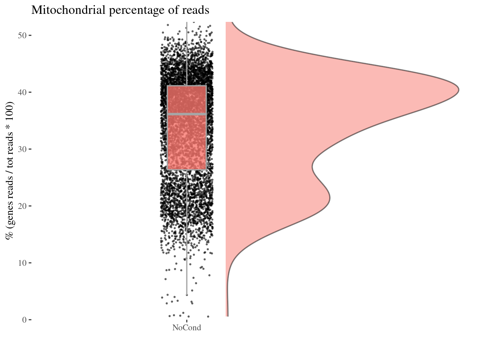
Check no further outliers after all the culling
cellSizePlot(PBMC2)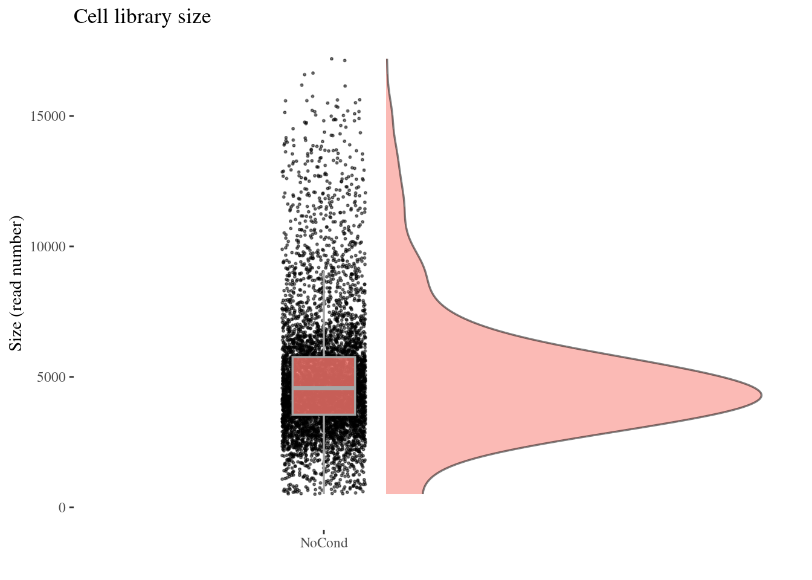
genesSizePlot(PBMC2)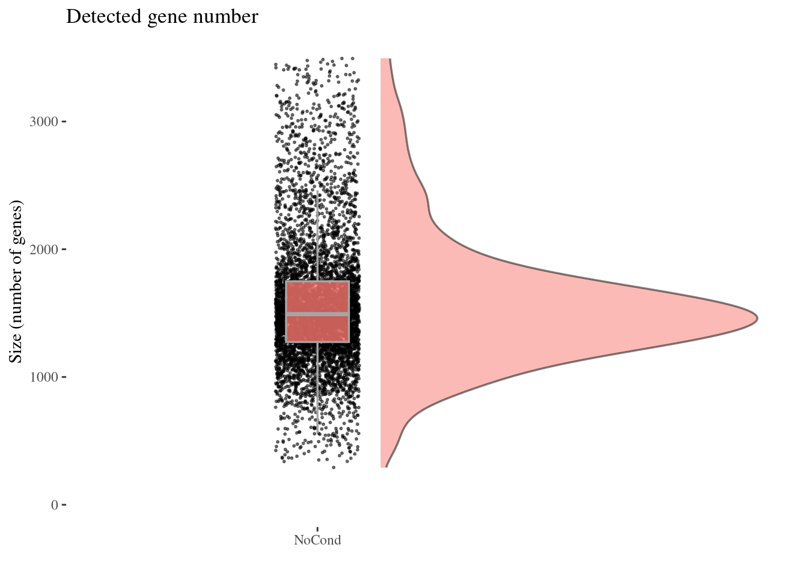
Cleaning, round 1
PBMC2 <- clean(PBMC2)
c(pcaCellsPlot, pcaCellsData, genesPlot, UDEPlot, nuPlot, zoomedNuPlot) %<-% cleanPlots(PBMC2)
plot(pcaCellsPlot)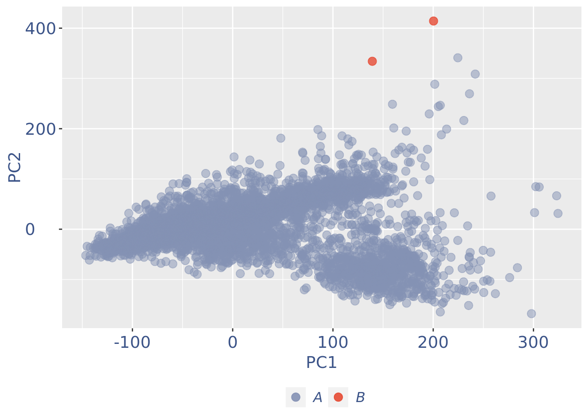
plot(genesPlot)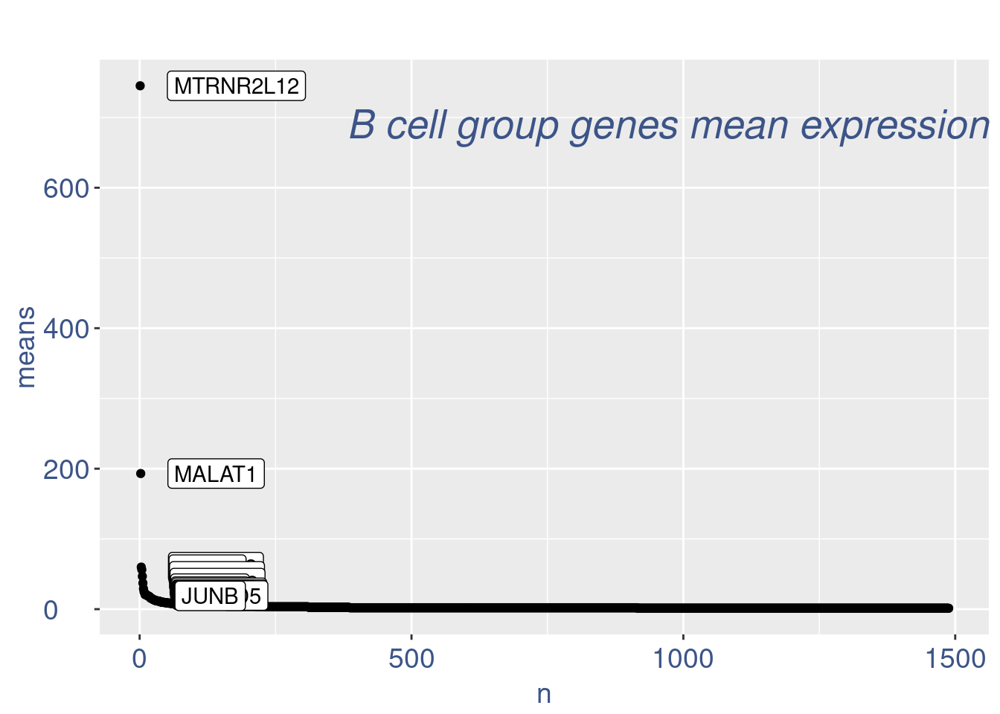
plot(pcaCellsPlot)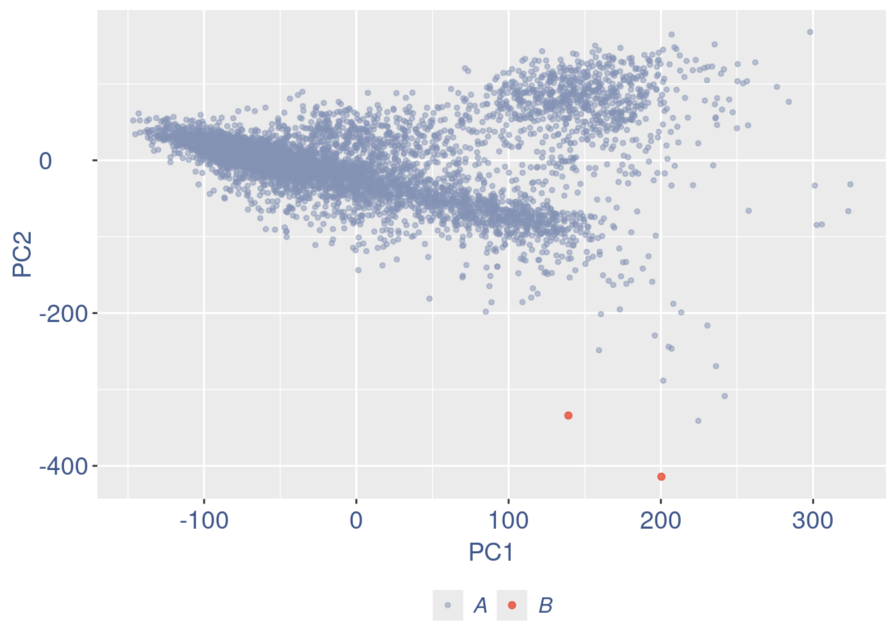
PBMC2 <- addElementToMetaDataset(PBMC2, "Num drop B group", 0)plot(UDEPlot)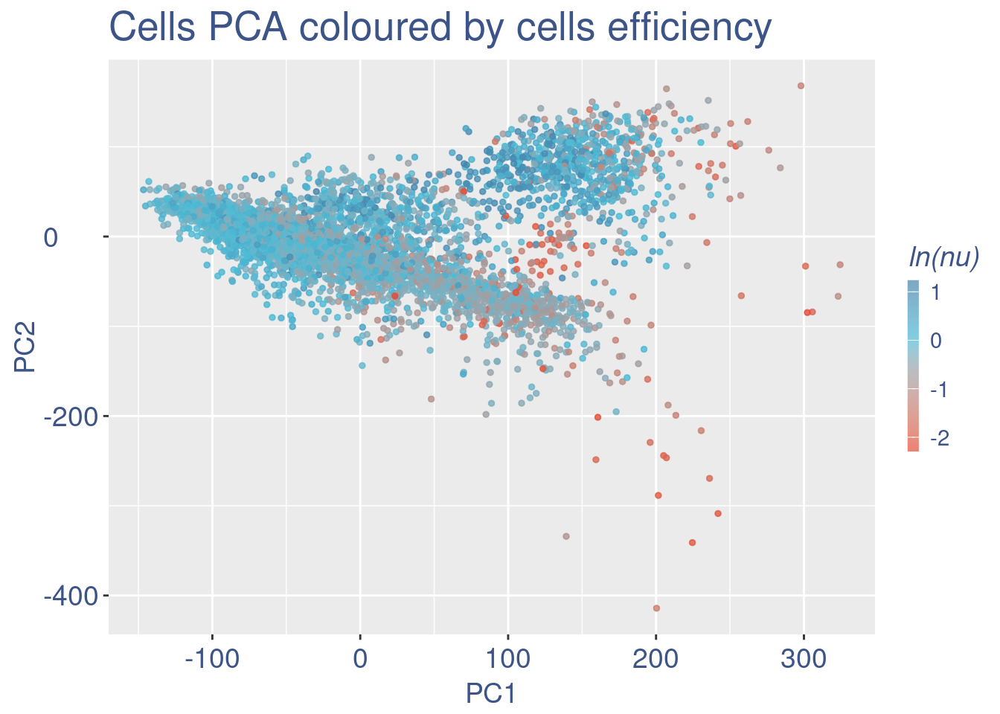
plot(nuPlot)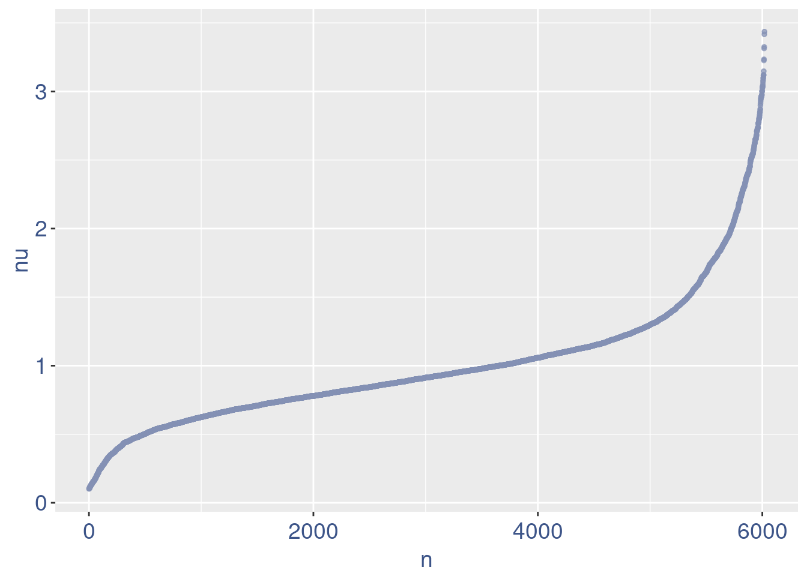
plot(zoomedNuPlot) 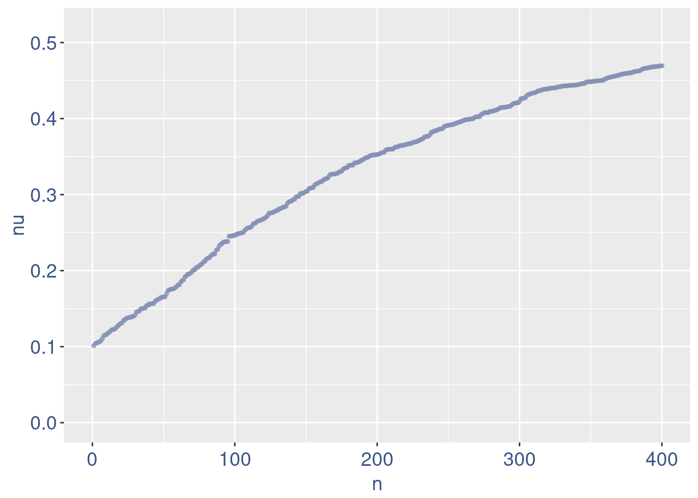
Save the filtered dataset
if (!dir.exists(dir10X)) {
write10xCounts(dir10X, getRawData(PBMC2))
}PBMC2 <- proceedToCoex(PBMC2, calcCoex = TRUE, cores = 5L, saveObj = FALSE)
saveRDS(PBMC2, file = paste0(outDir, sampleCond, ".cotan.RDS"))Sys.time()[1] "2026-01-20 10:06:25 CET"sessionInfo()R version 4.5.2 (2025-10-31)
Platform: x86_64-pc-linux-gnu
Running under: Ubuntu 22.04.5 LTS
Matrix products: default
BLAS: /usr/lib/x86_64-linux-gnu/blas/libblas.so.3.10.0
LAPACK: /usr/lib/x86_64-linux-gnu/lapack/liblapack.so.3.10.0 LAPACK version 3.10.0
locale:
[1] LC_CTYPE=C.UTF-8 LC_NUMERIC=C LC_TIME=C.UTF-8
[4] LC_COLLATE=C.UTF-8 LC_MONETARY=C.UTF-8 LC_MESSAGES=C.UTF-8
[7] LC_PAPER=C.UTF-8 LC_NAME=C LC_ADDRESS=C
[10] LC_TELEPHONE=C LC_MEASUREMENT=C.UTF-8 LC_IDENTIFICATION=C
time zone: Europe/Rome
tzcode source: system (glibc)
attached base packages:
[1] stats4 stats graphics grDevices utils datasets methods
[8] base
other attached packages:
[1] DropletUtils_1.28.1 SingleCellExperiment_1.32.0
[3] SummarizedExperiment_1.38.1 Biobase_2.70.0
[5] GenomicRanges_1.62.1 Seqinfo_1.0.0
[7] IRanges_2.44.0 S4Vectors_0.48.0
[9] BiocGenerics_0.56.0 generics_0.1.3
[11] MatrixGenerics_1.22.0 matrixStats_1.5.0
[13] zeallot_0.2.0 ggplot2_4.0.1
[15] tibble_3.3.0 Seurat_5.2.1
[17] SeuratObject_5.1.0 sp_2.2-0
[19] COTAN_2.11.1 dplyr_1.1.4
loaded via a namespace (and not attached):
[1] RcppAnnoy_0.0.22 splines_4.5.2
[3] later_1.4.2 R.oo_1.27.1
[5] polyclip_1.10-7 fastDummies_1.7.5
[7] lifecycle_1.0.4 edgeR_4.6.3
[9] doParallel_1.0.17 globals_0.18.0
[11] lattice_0.22-7 MASS_7.3-65
[13] ggdist_3.3.3 dendextend_1.19.0
[15] magrittr_2.0.4 limma_3.64.0
[17] plotly_4.11.0 rmarkdown_2.29
[19] yaml_2.3.10 httpuv_1.6.16
[21] sctransform_0.4.2 spam_2.11-1
[23] spatstat.sparse_3.1-0 reticulate_1.42.0
[25] cowplot_1.2.0 pbapply_1.7-2
[27] RColorBrewer_1.1-3 abind_1.4-8
[29] Rtsne_0.17 R.utils_2.13.0
[31] purrr_1.2.0 circlize_0.4.16
[33] GenomeInfoDbData_1.2.14 ggrepel_0.9.6
[35] irlba_2.3.5.1 listenv_0.9.1
[37] spatstat.utils_3.1-4 goftest_1.2-3
[39] RSpectra_0.16-2 dqrng_0.4.1
[41] spatstat.random_3.4-1 fitdistrplus_1.2-2
[43] parallelly_1.46.0 DelayedMatrixStats_1.30.0
[45] codetools_0.2-20 DelayedArray_0.36.0
[47] scuttle_1.18.0 tidyselect_1.2.1
[49] shape_1.4.6.1 UCSC.utils_1.4.0
[51] farver_2.1.2 ScaledMatrix_1.16.0
[53] viridis_0.6.5 spatstat.explore_3.4-2
[55] jsonlite_2.0.0 GetoptLong_1.0.5
[57] progressr_0.15.1 ggridges_0.5.6
[59] survival_3.8-3 iterators_1.0.14
[61] foreach_1.5.2 tools_4.5.2
[63] ica_1.0-3 Rcpp_1.1.0
[65] glue_1.8.0 gridExtra_2.3
[67] SparseArray_1.10.8 xfun_0.52
[69] distributional_0.5.0 ggthemes_5.2.0
[71] GenomeInfoDb_1.44.0 HDF5Array_1.36.0
[73] withr_3.0.2 fastmap_1.2.0
[75] rhdf5filters_1.20.0 digest_0.6.37
[77] rsvd_1.0.5 parallelDist_0.2.6
[79] R6_2.6.1 mime_0.13
[81] colorspace_2.1-1 scattermore_1.2
[83] tensor_1.5 spatstat.data_3.1-6
[85] R.methodsS3_1.8.2 h5mread_1.0.0
[87] tidyr_1.3.1 data.table_1.17.0
[89] httr_1.4.7 htmlwidgets_1.6.4
[91] S4Arrays_1.10.1 uwot_0.2.3
[93] pkgconfig_2.0.3 gtable_0.3.6
[95] ComplexHeatmap_2.26.0 lmtest_0.9-40
[97] S7_0.2.1 XVector_0.50.0
[99] htmltools_0.5.8.1 dotCall64_1.2
[101] zigg_0.0.2 clue_0.3-66
[103] scales_1.4.0 png_0.1-8
[105] spatstat.univar_3.1-3 knitr_1.50
[107] reshape2_1.4.4 rjson_0.2.23
[109] nlme_3.1-168 rhdf5_2.52.0
[111] proxy_0.4-27 zoo_1.8-14
[113] GlobalOptions_0.1.2 stringr_1.6.0
[115] KernSmooth_2.23-26 parallel_4.5.2
[117] miniUI_0.1.2 pillar_1.10.2
[119] grid_4.5.2 vctrs_0.6.5
[121] RANN_2.6.2 promises_1.3.2
[123] BiocSingular_1.26.1 beachmat_2.26.0
[125] xtable_1.8-4 cluster_2.1.8.1
[127] evaluate_1.0.3 locfit_1.5-9.12
[129] cli_3.6.5 compiler_4.5.2
[131] rlang_1.1.6 crayon_1.5.3
[133] future.apply_1.20.0 labeling_0.4.3
[135] plyr_1.8.9 stringi_1.8.7
[137] viridisLite_0.4.2 deldir_2.0-4
[139] BiocParallel_1.44.0 assertthat_0.2.1
[141] lazyeval_0.2.2 spatstat.geom_3.4-1
[143] Matrix_1.7-4 RcppHNSW_0.6.0
[145] patchwork_1.3.2 sparseMatrixStats_1.20.0
[147] future_1.58.0 Rhdf5lib_1.30.0
[149] statmod_1.5.0 shiny_1.11.0
[151] ROCR_1.0-11 Rfast_2.1.5.1
[153] igraph_2.1.4 RcppParallel_5.1.10